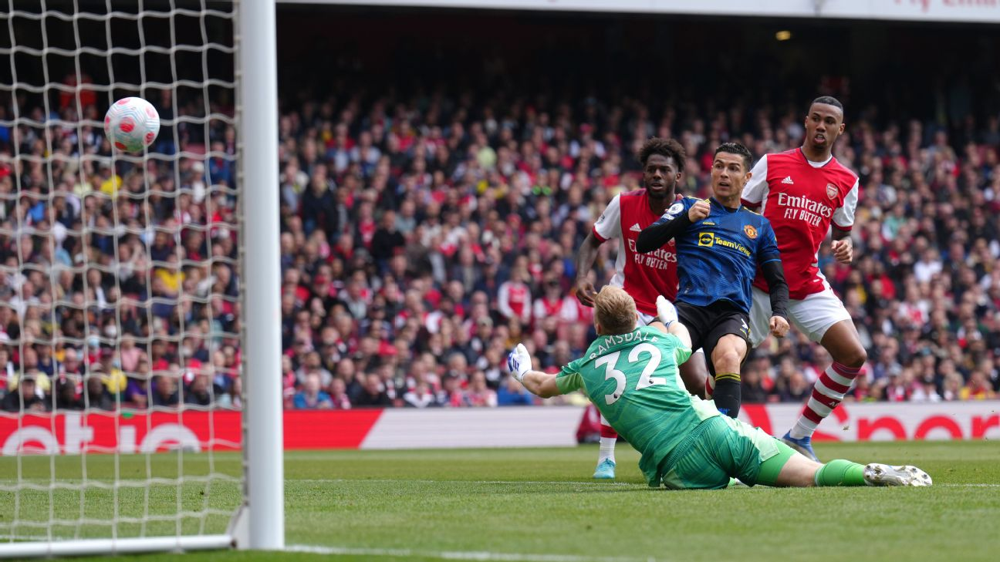

February 16, 2023
For this project, I analyzed the top league scorers in a specific sports league using both descriptive and predictive analysis techniques.
The dataset Top league Scorers retrieved from Kaggle is a dataset consisting of statistics of players from top leagues in the world from 2016 to 2020.
In the descriptive analysis, I used summary statistics and visualization techniques to explore and present the distribution of the scores. This project was executed in the R studio using R programming language.

The project in Module 2 of Introduction to Analytics (ALY6000) is about understanding how to use R to interpret and visualize the dataset BullTroutML2.csv provided by my Professor.
I developed the understanding of data visualisation techniques through scatterplot and histogram using inbuilt libraries.
An important take away from this project is understanding how powerful and useful can various be for analysing and understanding the data..
For this project, I conducted an exploratory analysis of the Netflix dataset as part of your coursework in Probability Theory and Introduction to Statistics class.
I started by getting a sense of the data, including its size, number of columns and rows, and data types.
Then, I created visualizations such as histograms, bar plots, scatterplots, and pie chart to represent the data and explore its distribution, relationships between variables, and outliers
I also obtained descriptive statistics such as mean, median, standard deviation, and quartiles to summarize the central tendency, spread, and variability of the data.
Finally, I found subsets of the data and obtained descriptive statistics for each subset, and created visualizations to represent the subset data.
Overall, my analysis provided insights into the Netflix dataset and helped me better understand its characteristics and patterns.

Conducting regularization method for models to describe relationships among variables to make useful predictions.
College dataset downloaded from Kaggle was used to build regualrization models using Ridge and Lasso.
After building regularization by using the Ridge and Lasso, Comparison was made to determine which model performed better on the college dataset.

Performed a Chi-Square Goodness-of-Fit test on the baseball dataset to determine if there is a difference in the number of wins by decade.
Also performed a Two-way ANOVA test on the crop datset using yield as the dependent variable and fertilizer and density as the independent variables.
Decisions were made after obtaining results from various test on wether to reject or not reject the null hypothesis of both cases